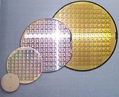

M-Labs
M-Labs
MiSoC
MiSoC improves on the existing Milkymist SoC by introducing two key features:
- Built on the powerful Migen VLSI logic design system.
- Much increased system memory performance thanks to a new architecture (LASMI).
This translates to more development productivity, better video resolution and quality, ease of designing complex hardware accelerators, and much more flexibility in hardware designs.
The repository is hosted by GitHub and is available here.
MiSoC supports the Milkymist One and Mixxeo boards, and some other boards are supported by the unofficial ports below.
Unofficial ports